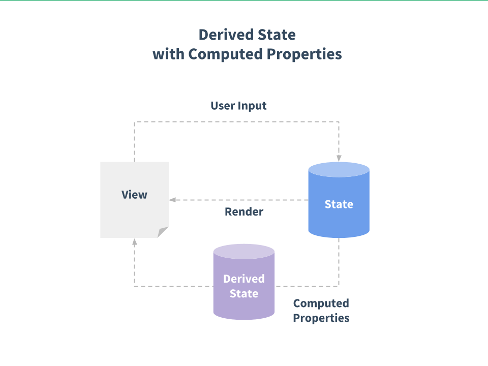

Vue
The Progressive JavaScript Framework
UNIS Dev Team Vue Training Slides
By Vick EapWhat is Vue?
Vue.js is a progressive JS framework for building dynamic user interfaces.
What does Progressive Framework mean?
- Progressive - flexibility to incrementally adopt more features in relation to project needs and size
- Framework - library written in vanilla JS to help you build your app faster, write less code, write cleaner, more organized code inspired by an MVVM design pattern.
FEATURES
- Reactive
- Virtual DOM
- Directives
- Components
- MVVM inspired
Installation Options
- CDN
- Download locally and add a script tag
- NPM install and use with module bundlers like Webpack and Browserify
Core Concepts
- Reactive Rendering
- Data updates the view, view updates the data, less code to manage to tie them together
- Declarative DOM manipulation techniques
- Cleaner, easier to write, easier to read, easier to maintain, less code
Core Concepts
- Component Oriented Architecture
- Less repetition, less code, better organization
- Virtual DOM implementation, for fast efficient DOM updates
- Performance, better user experience
Imperative vs. Declarative Programming
- Imperative - tell the cpu how to do something, provide it with steps
- Declarative - tell the cpu what you want, or your intended end result, but not provide steps
Why Vue takes a declarative approach?
- Cleaner
- More Semantic
- More Legible
- Easier to Maintain
Dynamic Input Binding
 VS
VS
Looping and building dynamic elements
 VS
VS
The Vue Instance

The Vue Instance
Directives in Vue
Directives are HTML attributes that are provided by Vue for interaction with the DOM. Some notable directives are:
v-bind
- Binds the HTML attribute to data in the vue instance
- When used to bind the class or style attribute, it supports additional value types such as Array or Objects
v-on
- Attaches an event listener to the element. The event type is denoted by the argument
- The expression can be a method name, an inline statement, or omitted if there are modifiers present.
Exercise 1
Get Code Gistv-model
- Creates two-way binding on form input and textarea elements
- It automatically picks the correct way to update the element based on the input type
v-for
- Allows you to dynamically render elements based on items in an array or an object.
Exercise 2
Get Code Gistv-if, v-else, v-else-if
- Conditional Rendering of a DOM element based on truthy or falsy value provided to the directive
v-if vs. v-show
- v-if is "Real" conditional rendering because it ensures that event listeners and child components inside the conditional block are properly destroyed and re-created during toggles.
- v-if has higher toggle costs, v-show has higher initial render costs.
- Use v-show if you need to toggle something very often, and prefer v-if if the condition is unlikely to change at runtime.
v-text & v-html
- v-text just updates the textContent of an element. can be used in place of {{ }} syntax
- v-html updates the element's innerHTML
v-pre, v-cloak, v-once
- v-pre is used to skip compilation. Skipping large numbers of nodes with no directives on them can also speed up compilation.
- v-cloak is used to hide un-compiled mustache bindings until the Vue instance is ready.
- v-once is used to render the element and component once only. This can be used to optimized update performance.
Computed Properties
Computed Properties
- Calculations on state (i.e., data properties)
- Dependent on values of the state, if state changes so does the computed property
- Cached, for performance considerations
- Also known as derived state
Watch Properties
- A custom function to 'watch' a data property for changes
- Has access to old and new values of the data property
- Can invoke a method each time the data property changes.
- Official docs recommends to use watchers when you want to perform asynchronous or expensive operations in response to changing data
Filters
- Used to apply common text formatting
- They are most common in interpolations and v-bind expressions
- Denoted by the pipe symbol --> |
Lifecycle Hooks
- created - data, computed properties, methods, watchers are set up before mount
- mounted - instance or component has been mounted to the dom, app.$el is available
- updated - Called after a data change causes the virtual DOM to be re-rendered and patched.
- destroyed - component or instance should no longer exist
Exercise 3
Get Code GistComponents
Components are one of the most powerful features of Vue. They help you extend basic HTML elements to encapsulate reusable code. At a high level, components are custom elements that Vue’s compiler attaches behavior to.
Why are components useful?
- Reusability
- Markup is more readable.
- Can encapsulate it's own functionality and state
- Code Organization
Global Component Defintion
See the Pen Creating a Global Component by Vick (@dev_vick) on CodePen.
Local Component Definition
See the Pen Local Components by Vick (@dev_vick) on CodePen.
Note: Data in a component must be a function!
Component Props
- Custom Attributes
- Enable communication
- Props passed down from parent
- Events sent up from child
Props Down, Events Up

How Props are passed down?
Emitting Events
See the Pen Emitting Custom Events with Vue by Vick (@Vick003) on CodePen.
Slots
A placeholder in a component that will accept static content or even another component
See the Pen Parent-Child Using Slots by Vick (@dev_vick) on CodePen.
Mixins
Mixins are a flexible way to distribute reusable functionalities for Vue components. A mixin object can contain any component options. When a component uses a mixin, all options in the mixin will be “mixed” into the component’s own options.
See the Pen Basic Mixin Example by Vick (@dev_vick) on CodePen.